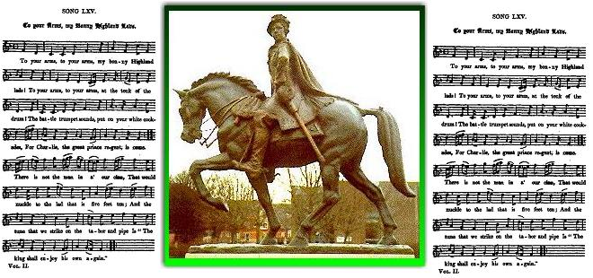
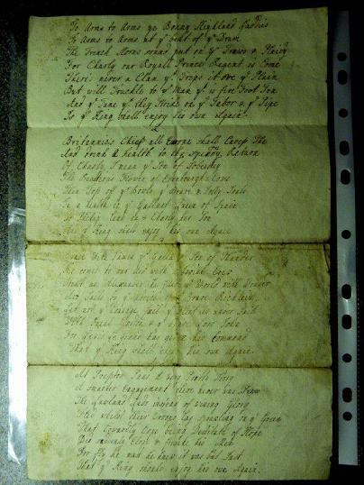
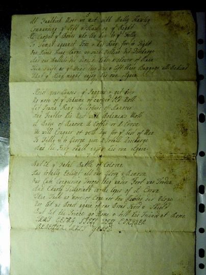

1° To your Arms, my bonny Highland Lads!
1° Aux armes, Montagnards!
Prince Charles marches for England (November 1745)
Tune - Mélodie"To your Arms, my bonny Highland Lads"
from Hogg's "Jacobite Relics" 2nd Series, Second series, N°65, page 129, 1821
Sequenced by Christian Souchon
Alternatively, same tune as When the King enjoys his own again" by M. Parker (1643)

|
To the tune: Is one rather of the street style. It was taken from the mouth of old Lizzy Lamb, a cottager at Ladhope on Yarrow. This is the air to which she sung it ; though I think it must have been composed to " The king shall enjoy his own again." Source: Hogg in "Jacobite Relics" vol II. |
A propos de la mélodie: Ce chant ressemble à une ballade des rues. Je l'ai entendu chanter à la vieille Lizzy Lamb, fermière à Ladhope on Yarrow. La mélodie est celle qu'elle a utilisée. Pourtant je pense qu'il a dû être composé pour "Si le roi reprend sa charge". Source: Hogg in "Jacobite Relics" vol II. |

|
TO YOUR ARMS, MY BONNY HIGHLAND LADS 1. To your arms, to your arms, my bonny Highland lads! To your arms, to your arms, at the touk of the drum! The battle trumpet sounds, put on your white cockades, For Charlie, the great prince regent, is come. There is not the man in a' our clan, That would knuckle to the lad that is five feet ten; And the tune that we strike on the tabor and pipe Is " The king shall enjoy his own again." (twice) 2. To your arms, to your arms! Charlie yet shall be our king! To your arms, all ye lads that are loyal and true! To your arms, to your arms! His valour nane can ding, And he's on to the south wi' a jovial crew. Good luck to the lads that wear the tartan plaids! Success to Charlie and a' his train ! The right and the wrang they a' shall ken ere lang, And the king shall enjoy his own again. 3. The battle of Gladsmuir it was a noble stour, And weel do we ken that our young prince wan; The gallant Lowland lads, when they saw the tartan plaids, Wheel'd round to the right, and away they ran: For Master Johnnie Cope, being destitute of hope, Took horse for his life, and left his men; In their arms he put no trust, for he knew it was just That the king should enjoy his own again. 4. To your arms, to your arms, my bonny Highland lads! We winna brook the rule o' a German thing. To your arms, to your arms, wi' your bonnets and your plaids! And hey for Charlie, and our ain true king ! Good luck shall be the fa' o' the lad that's awa, The lad whose honour never yet knew stain: The wrang shall gae down, the king get the crown, And ilka honest man his own again. Source: "The Jacobite Relics of Scotland, being the Songs, Airs and Legends of the Adherents to the House of Stuart" collected by James Hogg, volume II published in Edinburgh by William Blackwood in 1821. |
AUX ARMES, MONTAGNARDS! 1. Montagnards, Montagnards, mes braves Montagnards, Aux armes, Montagnards! N'entendez-vous pas les tambours, La trompette guerrière? Arborez vos cocardes! Voyez Charlie notre Régent apparaître au grand jour! Il n'est personne dans tout notre clan Qui n'obéirait docilement à ce gaillard de cinq pieds dix pouces à son tour Ce que répètent plein d'entrain nos flutes et tambourins: C'est "Le roi doit reprendre sa charge pour toujours!" (bis) 2. Montagnards, Montagnards, Charles soit notre roi! Mes braves Montagnards, tous autant fidèles que droits! Montagnards, Montagnards! On le dit invincible Et vers le sud il se dirige en bonne compagnie. Bonne chance à vous, porteurs de tartan! A Charles et les siens, tout autant, ainsi qu'à tous les braves qui composent son train, Démêler le bon du mauvais, cela sera bientôt fait: "Le roi pourra reprendre sa charge dès demain!" 3. Tranentmuir, Tranentmuir, la belle et grande victoire! Et nous tous, nous savions que le jeune prince vaincrait En voyant les tartans s'infléchir sur la droite Ceux des Basses Terres déboîtent avant de décamper! Pour Johnnie Cope il n'y a plus d'espoir Vite en selle, et sans un au revoir, Il abandonne ses pauvres soldats à leur sort; Et il ne leur fait désormais plus confiance, lui qui sait Que "Notre roi s'apprête à régner, tout comme alors". 4. Montagnards, Montagnards, aux armes Montagnards! Ne tolérons pas qu'un Germain nous impose sa loi! Aux armes, les gars en bonnet et tiretaine, Le vrai Prince est celui qu'on aime: c'est Charlie notre roi! Bonne chance à toi qui t'en vas au loin Dont l'honneur hier comme demain ne fut jamais terni de la plus légère souillure Et l'usurpateur partira, lorsque le vrai roi viendra Reprendre sa charge et mettre fin à l'imposture. (Trad. Christian Souchon(c)2010) |
|
It appears from the 5th line of the 4th stanza: “Good luck shall be the fa' o' the lad that's awa...” that “Awa” means here “away from Scotland, beyond the Border” and not “abroad, in France or Italy”, since the song only mentions the Jacobite victory of Preston Pans, named here “Gladsmuir” and none of the subsequent battles, for instance Falkirk on 17th January 1746. This allows to date the song to the lapse of time between 1st November 1745, when the “Blue Bonnets crossed the Border” and 22nd December 1745, when they were back to Dumfries. |
Il apparaît à la lecture mot à mot du 5ème vers de la 4ème strophe: “Bonne chance soit le lot du jeune homme qui est au loin...” qu'"au loin" signifie ici "hors de l'Ecosse, au-delà du Border" et non point, "à l'étranger, en France ou en Italie". En effet ce chant parle de la victoire Jacobite de Preston Pans, appelée, comme souvent, "Gladsmuir" mais d'aucune des batailles suivantes, comme celle de Falkirk qui eut lieu le 17 janvier 1746. Cela permet de dater ce chant de la période comprise entre le 1er novembre 1745 qui vit “les Bonnets Bleus franchir la Frontière” et le 22 décembre 1745 date de leur retour à Dumfries. |
|
The following variant of the same song was sent in by a fine contributor from Yorkshire. This MS version is longer. It has with the foregoing two stanzas in common (1 and 4 corresponding respectively to stanzas 1 and 3 in Hogg's version). This second, unmistakably English song is apparently a Jacobite song, but for the last stanza that, in particular in its last line, changes altogether the message it conveys. However certain changes, like the replacement of the “battle trumpet” with a “French horn” (alluding to French support of the rebellion), or the mention of “large pieces and shower of bullets” in connection with fighters who were known to despise firearms and to be fond of their broadswords and claymores, could cunningly announce the final dramatic change of tone! |
La variante qu'on va lire du même chant a été communiquée par un aimable contributeur du Yorkshire. Il s'agit d'une version manuscrite plus longue. Elle a deux strophes en commun avec la précédente (1 et 4 correspondant aux strophes 1 et 3 de la version de Hogg). Ce second chant, dont l'origine anglaise ne fait aucun doute, est en apparence un chant Jacobite, excepté la dernière strophe et, en particulier, la dernière ligne qui change du tout au tout le message à faire passer. Cependant on note certains changements, tels que le remplacement de la "trompette guerrière" par un "cor d'harmonie" (dont le nom anglais évoque le soutien de la France à la rébellion), ou encore l'évocation "de grandes pièces d'artillerie et de déluge de feu" à propos de combattants connus pour leur mépris des armes à feu et leur préférence pour leurs "larges épées" et leur claymores. Ces nuances annoncent peut-être fort astucieusement le coup de théâtre de la dernière ligne! |
2° To Arms, to Arms, ye Bonny Highland Laddies
2° Aux armes, aux armes, braves gars des Highlands!
Charles' visit to the King of Spain (End of 1746)
|
1. To Arms, to Arms, ye Bonny Highland Laddies, To Arms to Arms at the beat of the Drum! The French Horns sound! [1] Put on the Traws and Plaidy, [2] For Charly, our Royall Prince Regent is come. There's never a Clan that Trips it o'er the Plain But will Truckle to the Man that is five Foot Ten And the Tune that they strike on the Tabor and the Pipe Is "The King shall enjoy his own Again". 2. Britannia's Chief, all Europe shall Caress Thee And drink a health to thy speedy Return. Of Charly, I mean, the son of Sobiesky [3]. The Beautious Flower of Edenbourgh's Come. Then Toss off the Bowls, the Brave and Jolly S(h)oals, In a health to the Gallant Queen of Spain! [4] To Philip, lead on! And Charly her Son! [5] And the King shall enjoy his own Again. 3. Brave Fitz-James, the Gallant Son of Flander [6] He comes to our Aid with a Jovial Crew, Stout as Alexander he fills the World with Wonder And Sails by the Advice of Brave Richlieu. [7] Let not the Courage fail, the fleet is under Sail With O'Neal Gordon [8] and the brave Lord John, [9] For Lewis Le Grand has given his Command [10] That the King shall enjoy his own Again. 4. At Preston Pans, A very Pretty Story, A smarter Engagement there never was Seen, The Lawland Lads instead of win(n)ing Glory Fled whilst their Troops lay sprawling on the Green. That Cowardly Cope being Destitute of Hope Did suddenly Elope and forsake his Men For fly he must, he knew it was but Just That the King should enjoy his own Again. 5. At Faulkirk Moor we met with Bully Hawley Commanding the Left and Husk on the Right. He Curssed the Boars who led him to the Folly To Tempt against Jove and his King for to fight. Our pieces being large, we such Volleis did Discharge And our Bullets did descend like a shower of Rain. [11] Then swift as the Wind they fled and left their Baggage all Behind That the King might enjoy his own Again. 6. Hoist your Canoes and Puppies and get Over No more of your Schemes of curssed Old Noll! Let Prusia King be Possess'd of Hanover And Feather his Nest with Bohemia's Moll! [12] A Badge of Renown, A Coffin or A Crown We will Conquer or we'll Dye for the best of Men. To Willy and to George give a total Discharge [13] And the King shall enjoy his own Again. 7. But Oh the Fatal Battle of Coloden Has totally Eclipst all our Glory and Renown. Our late Conquering Troops they under Foot was Troden And Charlie, Disapoint'd in the hopes of A Crown. Then talk no more of Cope nor how Hawley did elope, Nor let us Boast again of our Broad Sword and Shield But let the Prince go Home and tell his Friends at Rome THAT GEORG STILL WILL CONQUER REBELLION MUST YIELD! Transcript of the Yorkshire MS |
  The Yorkshire MS |
1. Montagnards, Montagnards, criez à perdre haleine, Aux armes, Montagnards! N'entendez-vous pas les tambours, Ni le cor d'harmonie? [1] Vos plaids de tiretaine [2] Pour Charlie, ce Régent qui mène le combat au grand jour! Il n'est, circulant par le glen, de clan Qui n'obéirait docilement A ce gaillard de cinq pieds dix pouces à son tour! Ce que répètent plein d'entrain Nos flutes et tambourins: C'est "Le Roi va reprendre sa charge pour toujours!" (bis) 2. Chef de Grande-Bretagne, l'Europe tout entière Te cajole et lève son verre à ton prochain retour! Au retour de Charlie, dont coule dans les veines Le sang des Sobieski [3], la splendide fleur d'Edimbourg! Entrechoquez vos bocks en criant "skol!" Vos hanaps, vos verres et vos bols Pour boire à la santé de la Reine des Espagnols, [4] A la santé de son fils Charles; [5] de Philippe, où est le mal? Pour que la gloire du Roi prenne son envol! 3. Quand François de Fitz-James, le vaillant fils des Flandres, [6] S'en vient ici reprendre les armes avec ses preux, On dirait, étonnant la planète, Alexandre A bord de ses vaisseaux qu'affrète le brave Richelieu. [7] Courage, courage! La flotte vient, Elle fait voile, elle est en chemin, Gordon O'Neill [8] et Lord John [9] sont à bord, c'est certain. Tous ont reçu commandement Du grand roi qu'est Louis Le Grand, [10] De restituer sa charge au Roi des temps anciens. 4. Prestonpans, Prestonpans! Ah, la charmante histoire! Et plus belle victoire ne fut remportée jusqu'alors: Les gars des Basses-Terres qui dédaignent la gloire Abandonnent, peut-on le croire? sur le gazon leurs morts! Pour Cope le couard il n'y a plus d'espoir Vite en selle, et sans un au revoir, Il abandonne ses pauvres soldats à leur sort; S'il s'enfuit, c'est parce qu'il sait qu'il est juste que désormais "Le Roi, le véritable Roi gouverne encor". 5. Falkirk Moor, Falkirk Moor! Hawley le matamore Commande à l'aile droite, Husk à l'aile gauche, dit-on. Contre les polissons, Ah, comme il vocifère, Qui, bravant le sort, l'incitèrent à lutter pour son roi. Car nous disposions d'énormes canons, et les salves que nous envoyions, Nos balles firent s'abattre une pluie de fer, de feu, [11] Aussi rapides que le vent, ils filent, laissant tout en plan Afin que le Roi puisse rentrer dans le jeu. 6. Hissez pour prendre la mer canots et chaloupes Messieurs, assez de toutes ces ruses à la Cromwell! Que le roi de Prusse se voie donner Hanovre! Qu'y fasse aussi son nid la pauvrette Marie-Thérèse! [12] Titre de gloire, couronne ou cercueil, Nous vaincrons ou nous aurons l'orgueil de mourir pour le meilleur des hommes ici-bas. Quant à George et à Guillemet, qu'on leur donne leur congé, [13] Afin que reprenne enfin sa charge le Roi! 7. Culloden, Culloden, la fatale bataille! Lorsque sous la mitraille s'abîmèrent gloire et renom, Où les vainqueurs d'hier mordirent la poussière, Où fut mis fin à la carrière de l'audacieux garçon. Assez parlé de Cope ou de Hawley: Les targes, les claymores qui faisaient notre orgueil et notre fierté remplirent leur mission, Pour le Prince il est temps en somme, de dire à ses amis à Rome: GEORGE EST VAINQUEUR: IL FAUT CESSER LA REBELLION! Trad. Ch. Souchon (c) 2013 |
|
[1] A thinly veiled hint at the fact that Prince Charles Stuart enjoyed foreign support: the "battle trumpet" in the original song becomes a "French horn". The rest of the song focuses on political patronage or military support extended to the Jacobite cause by foreign countries, especially France. [2] Scottish trousers and belted plaid (in Scotticizing spelling) replace the White Cockade in the original. A strong political symbol, the "Rose of Yorkshire" of the Stuarts yielded to another momentous issue: the suppression of the Highland garb pursuant to the "Disclothing Act" which was to come into force as from 1rst August 1747. [3] Prince Charles's mother, Maria Clementina Sobieska, was the granddaughter of the famous king John Sobieski of Poland. She married James Francis Stuart, the Old Pretender, on 3rd September 1719. Here the point is not that Sobieski was a hero, but that he was a Pole and so is his "son", the so-called "flower of Edinburgh". [4] The Queen of Spain: Elizabeth Farnese (1692 - 1766) married by proxy, in December 1714, King Philip V of Spain (who died on 9th July 1746), a weak man over whom she quickly obtained complete influence. Soon after his return to France (1oth October 1746) Charles Edward left to Spain hoping that he would obtain from the new King Ferdinand VI (Philip's son by his first wife) the support denied to him in France. He also intended to explore the possibility of marriage with one of the Spanish King's sisters. He managed to see King Ferdinand and the Queen who asked him, worried about English reactions, to go back to where he had come from. The Prince arrived back in Paris on 24th March 1747. It may be inferred that the song was composed during his stay in Spain. [5] Charly her son: Elizabeth had a son of her own, Charles (1716-1788) who was acknowledged by the powers in the Treaty of Vienna as the Duke of Parma in 1731 and in 1738, he became King of the two Sicilies. He was to abdicate his Italian thrones on succeeding to the Spanish throne as King Charles III of Spain in 1759. [6] The gallant son of Flanders: On 7th December 1745, Lord John Drummond (see [9]), brother of the Duke of Perth, landed at Montrose, coming from France, with a brigade including, among others two squadrons from the cavalry regiment Fitz-James. François de Fitz-James (1709-1764) was the son of the 1st Duke of Berwick, James FitzJames (1670-1734) referred to in the song A halter for rebels. The latter was an illegitimate son of King James II, hence his name (fitz=fils=son). He had fought at the battles of Steinkirk and Landen and was killed at the siege of Philipsburg. [7] Duke de Richelieu (1696-1788): Louis François Armand, great grand nephew to the famous cardinal, ought to have sailed to England with 10.000 men by the end of 1745, but he did not. See the Manifesto composed for him by Voltaire on page Prionns Tearlach. [8] Colonel Gordon O'Neill: his regiment of Derry and Tyrone men had fought at Aughrim and Limerick (1691). At Aughrim, he was found on the battlefield wounded, stripped and left for dead then rescued by relatives, serving under the enemy Williamite General Ginkel. After the war 409 Irish rank and file men from his regiment elected to serve the French King. It was the fist Regiment of "Wild Geese". In the reorganizing of the Jacobite army O'Neill's as well as all the other regiments were disbanded. O'Neill’s himself became the Colonel of the Charlemont regiment of Foot. Apparently Gordon O’Neill was still alive in 1747. See page Cath Eachroma . [9] Lord John Drummond: the brother of James Drummond, 3rd Duke of Perth, one of Prince Charles Edward Stuart's closest commanders, who was shot at Culloden, died later of his wounds and was buried at sea in 1746. John had created in 1744 the French Regiment of Infantry "Royal Ecossais" that made up most of the expeditionary force of about 1000 men sent to Scotland to help Prince Charles Stuart. He went into exile in France. He died at the siege of Berg op Zoom on 28th September 1747. Two other Drummonds who had come from France fought for the Prince at Culloden: Louis-Jean Drummond de Melfort and James Drummond de Melfort. [10] Lewis le Grand: usually refers to French king Louis XIV who was a staunch ally of his cousin King James II/VII (unlike Louis XV who is apparently addressed in the present poem). [11] Our pieces being large: maybe an ironical hint at the weak artillery of the Highland Army. They carried with them an old gun, known as “Mons Meg”, that was out of order, but the Highlanders insisted to keep with them during the whole venture as a lucky charm. French artillerists were in charge of it. It was drawn by two ponies. I was only used for gunshots with powder to give alarm or in sign of triumph. After Culloden it was transported to the Tower of London as a trophy. [12] Prussia's king and Bohemia's Moll: apparently refer to the claims set forth by Frederick II of Prussia and by Maria-Theresa of Austria during the War of Austrian Succession which the Treaty of Aix-la-Chapelle ended in October 1748. (Noll= Cromwell). [13] Willy and George who will be given “a total discharge" are, of course, King George II and his second son, William Duke of Cumberland, the butcher of Culloden. |
[1] Allusion à peine voilée au soutien étranger dont bénéficiait le prince Charles Stuart: la "trompette guerrière" du chant original est devenue un "cor français" (nom anglais du "cor d'harmonie"). Le reste du chant insiste sur l'aide diplomatique et militaire apportée par les pays étrangers à la cause des Stuart, en particulier la France.. [2] Les plaids de tiretaine (tartan) (hauts de chausses et kilts) remplacent la Cocarde blanche de l'original. Un puissant symbole politique, la "Rose de Yorkshire" des Stuart a disparu avec l'émergence d'un autre problème essentiel: l'interdiction du costume des Highlands en application du "Disclothing Act" qui allait entrer en vigueur le 1er août 1747. [3] La mère du Prince Charles, Marie Clémentine Sobieska, était la petite fille du fameux roi Jean Sobieski de Pologne. Elle épousa Jacques François Stuart, le Vieux prétendant, le 3 septembre 1719. Ici on ne met pas tant l'accent sur le fait que Sobieski était un héros, mais un Polonais, tout comme son "fils" pourtant réputé être la "belle fleur d'Edimbourg". [4] La Reine d'Espagne: Elizabeth Farnèse (1692 - 1766) épousa par procuration, en décembre 1714, le roi Philippe V d'Espagne (qui mourut le 9 juillet 1746), un homme faible qu'elle parvint bien vite à dominer. Dès son retour en France (10 octobre 1746) Charles Edouard partit pour l'Espagne dans l'espoir de trouver auprès du nouveau roi Ferdinand VI (fils de Philippe par sa première femme) le soutien que la France lui refusait. Il comptait aussi examiner la possibilité d'un mariage avec l'une des soeurs du roi d'Espagne. Il réussit à obtenir une entrevue avec le roi Ferdinand et la reine qui, inquiets des réactions anglaises, le prièrent de retourner, au plus vite, d'où il était venu. Le Prince fut de retour à Paris le 24 mars 1747. On peut supposer que le présent chant fut composé pendant ce séjour en Espagne. [5] Charles leur fils: Elizabeth avait un fils d'un précédent mariage, Charles (1716-1788) qui fut reconnu par les signataires du Traité de Vienne Duc de Parme en 1731 et qui, en 1738, devint roi des Deux-Siciles. Il devait renoncer à ces couronnes italiennes en succédant au trône d'Espagne dont il devint le roi Charles III en 1759. [6] Le vaillant fils des Flandres: le 7 décembre 1745, Lord John Drummond (cf. note [9]), fils du Duc de Perth, débarqua à Montrose, venant de France, avec une brigade comportant, entre autres, deux escadrons du régiment de cavalerie Fitz-James. François de Fitz-James (1709-1764) était le fils du 1er duc de Berwick, James FitzJames (1670-1734) dont il est question dans le chant La corde pour les rebelles. Ce dernier était un fils illégitime du roi Jacques II, d'où son nom (fitz=fils). Il avait combattu à Steinkirk ainsi qu'à Landen et il fut tué au siège de Phillipsburg. [7] Le Duc de Richelieu (1696-1788): Louis François Armand, arrière petit neveu du célèbre cardinal, aurait dû débarquer en Angleterre avec 10.000 hommes, fin 1745, mais il n'en fit rien. On verra le Manifeste composé à son intention par Voltaire, à la page Prionns Tearlach. [8] Le colonel Gordon O'Neill: son régiment constitué d'hommes de Derry et de Tyrone avait combattu à Aughrim et à Limerick (1691). A Aughrim, on le retrouva blessé sur le champ de bataille, ses habits en lambeaux. Après l'avoir cru mort, des gens de sa famille qui servaient sous les ordres du général ennemi, Ginkel, le sauvèrent. Après la guerre, lui et 409 de ses soldats et officiers irlandais choisirent de servir dans l'armée du roi de France. Ce fut le premier régiment d'"Oies sauvages". Lors de la réorganisation de l'armée Jacobite, le régiment d'O'Neill, comme tous les autres régiments fut dissout. O'Neill lui-même devint Colonel du régiment d'infanterie de Charlemont. Il apparaît que Gordon O’Neill était encore envie en 1747. Cf. page Cath Eachroma. [9] Lord John Drummond: frère de James Drummond, 3ème Duc de Perth, qui fut l'un des commandants les plus proches du Prince Charles. Il fut atteint d'une balle à Culloden, mourut plus tard de ses blessures et fut enseveli en mer, en 1746. John, quant à lui, avait créé en 1744 le régiment français d'infanterie "Royal Ecossais" qui fournit l'essentiel des effectifs du corps expéditionnaire d'environ 1000 hommes envoyés en Ecosse soutenir le Prince Charles. Il s'exila ensuite en France et mourut au siège de Berg op Zoom, le 28 septembre 1747. Deux autres Drummond, venus de France eux aussi, combattirent à Culloden dans l'armée Jacobite: Louis-Jean Drummond de Melfort et James Drummond de Melfort. [10] Louis le Grand: cette épithète est habituellement réservée à Louis XIV qui fut un inébranlable allié de son cousin le roi Jacques II/VII (à la différence de Louis XV auquel il semble que le présent poème se rapporte). [11] Nos énormes canons: peut-être une allusion ironique à la faiblesse de l'artillerie des Jacobites. Ils transportaient avec eux un vieux canon appelé “Mons Meg”, qui fonctionnait très mal, mais que les Highlanders exigeaient d'avoir toujours avec eux comme un porte-bonheur. Il était servi par des artilleurs français et trainés par deux poneys. On le chargeait à poudre pour donner des signaux d'alerte ou pour célébrer les victoires. Après Culloden, il fut transporté à la tour de Londres en manière de trophée. [12] Le roi de Prusse et Marie de Bohème: fait allusion apparemment aux prétentions de Frédéric II et de Marie-Thérèse d'Autriche pendant la guerre de succession d'Autriche à laquelle le Traité d'Aix-la-Chapelle mit fin en 1748. [13] Guillemet et George à qui l'on donnera congé définitif sont, bien entendu, le roi George II et son fils cadet, Guillaume, Duc de Cumberland, le boucher de Culloden. |